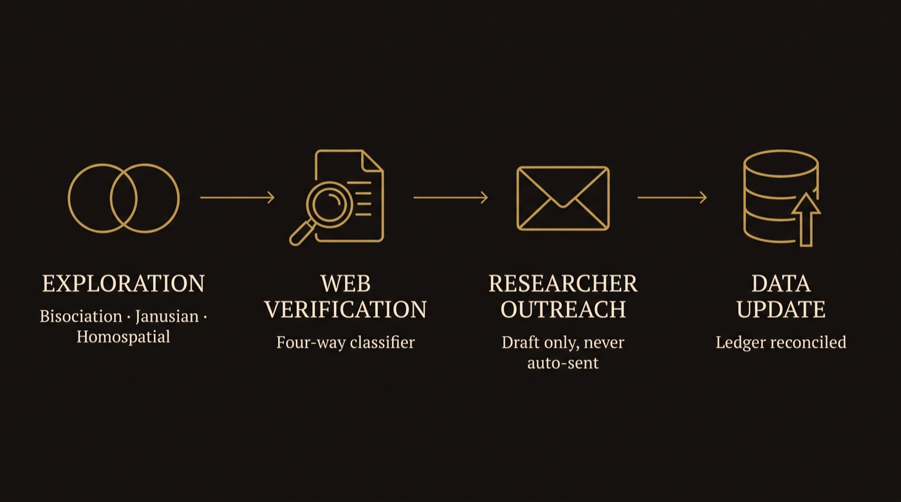
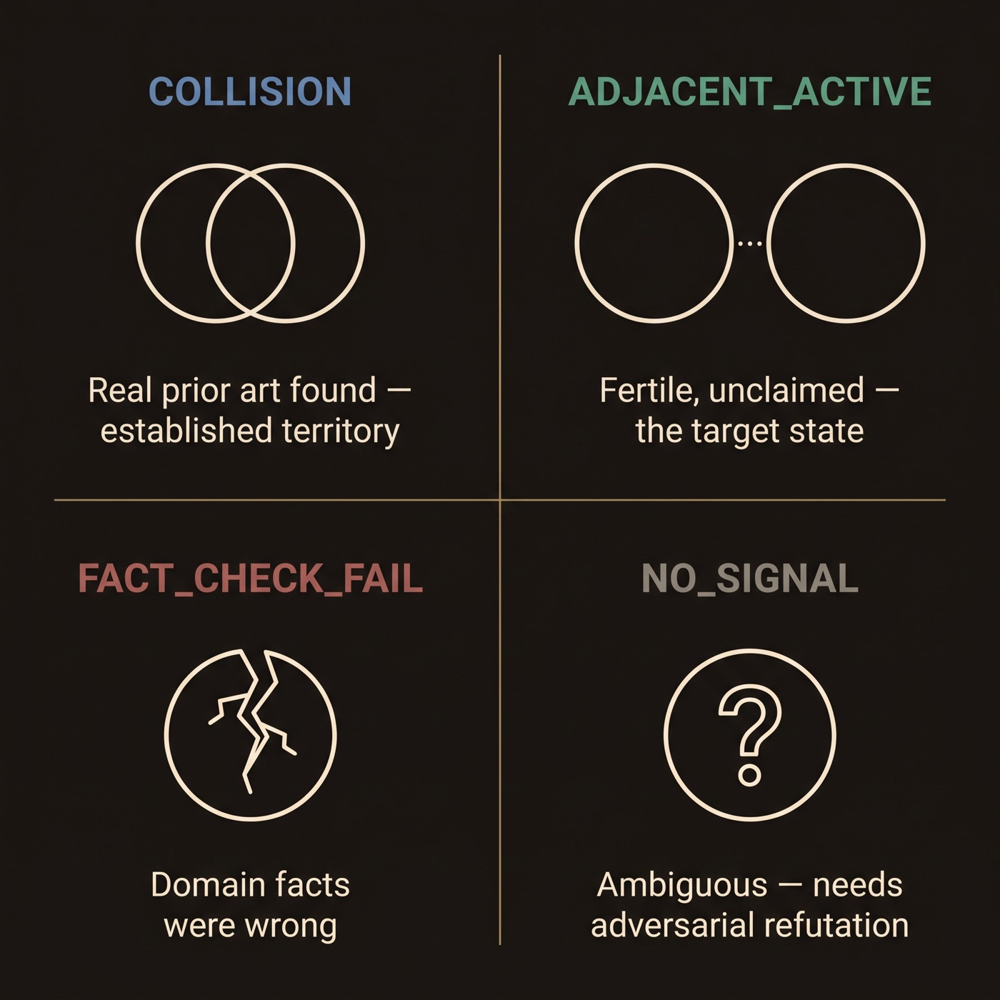
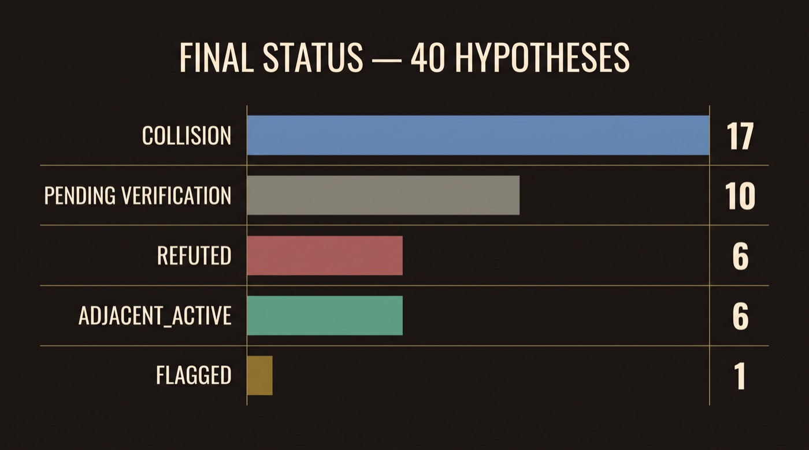

IThe Founding Collision
In October 1838, Charles Darwin picked up a book that had nothing to do with finches, barnacles, or beetles. It was An Essay on the Principle of Population, an economics pamphlet by Thomas Malthus about the brutal arithmetic of famine — the observation that human populations grow faster than food supplies ever can, guaranteeing that most of every generation dies before it gets the chance to reproduce. Darwin was reading it, by his own account, “for amusement.” He wasn’t looking for anything.
He had, by then, spent two years turning over a puzzle from a five-year voyage around the world: why do closely related species on nearby islands differ in small, specific ways — a slightly different beak here, a slightly different shell there? He had the observations. He didn’t have the mechanism. Then, reading Malthus’s chapter on the mathematics of overcrowded cities, something clicked. If human populations are held in check by a permanent, brutal excess of births over food, then every wild population must be too. Every generation of every species is born into a competition it mostly loses. And the individuals that happen to carry some small edge survive that competition more often than their siblings, on average, over and over, for millions of generations. No one has to design anything. You get evolution by natural selection.
Darwin named the collision himself, later, in his autobiography: reading Malthus is where the idea “at once occurred to me.” The single most consequential idea in the history of biology was not produced by staring harder at finches. It was produced by forcing two fields that had nothing to do with each other — population economics and natural history — into the same sentence.
This is not a freak occurrence. Johannes Kepler spent years trying to explain planetary orbits using the geometry of musical harmony. Claude Shannon founded information theory by noticing that the on/off logic of telephone relay switches was, structurally, the same thing as the true/false logic of Boolean algebra — a discipline built decades earlier to formalize philosophical logic, with no telephones in mind at all. The pattern recurs often enough across the history of science that FU was founded to ask a genuinely strange question in earnest: what if the collision itself — not talent, not luck, not years of immersion in one field — is the actual mechanism, and it can be done on purpose?
A hypothesis, in the sense this Charter uses the word, is nothing more exotic than a specific, falsifiable guess about how two things are secretly connected — precise enough that it could turn out to be wrong. Darwin’s guess was falsifiable: if population pressure didn’t actually produce differential survival, the theory would collapse. Most guesses like this, tried by most people, go nowhere — a plausible-sounding connection that turns out, on inspection, to already be well known, or to not actually hold up, or to be too vague to ever be wrong. Finding that out is the slow, expensive part of research (Article III puts real numbers on exactly how expensive).
FU is an attempt to automate both halves of what Darwin did by accident once: force the collision on purpose, over and over, across a large pool of real subjects — and then honestly check each result, the way a skeptical colleague would, before anyone spends a year of their life finding out the hard way. Every Article after this one describes exactly how, and exactly where it has failed along the way.
IIThe Three Doctrines
Darwin’s collision has a name. Two researchers, working decades apart, each independently studied how minds actually produce insights like his — and between them, they described three distinct mechanisms, not one. FU's three departments each hold one, faithfully, as their entire discipline.
Bisociation — two frames, collided (Department of Bisociation Studies)
Arthur Koestler was not, by training, a scientist. He was a Hungarian-British novelist and journalist who, in 1964, published a 750-page book called The Act of Creation, trying to find one shared mechanism underneath humor, art, and scientific discovery. His answer was a word he had to coin himself: bisociation — perceiving a situation from inside two self-consistent frames of reference at once, frames normally kept completely apart. Koestler’s own favorite illustration was the joke: a story appears to be going one way, following one frame — and the punchline reveals it fits a second, totally different frame just as well. Darwin’s moment with Malthus is a clean, real-world case: population economics is one matrix, natural history is a second, and neither one by itself contains natural selection. The insight lives only in the collision.
The Department of Bisociation Studies does exactly this, mechanically: it takes two genuinely unrelated domains from FU's pool, forces them together, and asks for a precise, falsifiable structural mapping — not a cute metaphor (“markets are like ecosystems”), but a claim specific enough that it could turn out to be wrong. One standing member of the record:
Real example, Bisociation Studies — still standing on the current Ledger:
Score breakdown (+55 pts)
- Phase 1 self-report (4/5): not scored — near-zero predictive signal, see Failure 5
- Phase 2 ADJACENT_ACTIVE: +30
- Actively researched, most recent evidence 2026 (0y old — a live, current research thread): +25
🔬 Independent Research Matches
The identified studies focus on the development and evaluation of translation systems aimed at improving communication in military operations, which is directly related to the claim that improvements in language translation accuracy can correlate with higher mission success rates.
- Evaluation Methodology and Metrics Employed to Assess the TRANSTAC Two-Way, Speech-to-Speech Translation Systems (2013) — This study evaluates the TRANSTAC program's speech-to-speech translation systems, aiming to enhance communication between military personnel and local populations, thereby potentially improving mission success rates.
- Performance Assessments of Two-Way, Free-Form, Speech-to-Speech Translation Systems for Tactical Use (2011) — This assessment focuses on evaluating speech-to-speech translation systems developed under the TRANSTAC program, which are intended to facilitate effective communication in military operations.
- FROM WORDS TO WARFARE: THE IMPACT OF TRANSLATION ERRORS ON SECURITY IN INTELLIGENCE OPERATIONS (2026) — This study examines how translation errors within intelligence operations can impact security, highlighting the critical role of accurate translation in military contexts.
Notes
The cited studies provide evidence that translation accuracy and effective communication are crucial for mission success in military operations. They demonstrate that translation errors can lead to strategic risks and that linguistic skills and interpreters positively affect mission effectiveness. Additionally, the evaluation of speech-to-speech translation systems underscores the importance of effective communication in tactical situations.
The Hypothesis
# Hypothesis: Language Linguistics × Military Strategy
Generated: 2026-08-29
Framework: UMPF Two-Domain Hypothesis Engine (Exponent Labs LLC)
## 1. The Two Frames (M₁, M₂)
M₁ — Language Linguistics: This domain studies how language is structured, evolves, and is used for communication, focusing on translation accuracy, meaning ambiguity, and the evolution of grammar through usage.
M₂ — Military Strategy: This domain examines the planning and execution of military operations, emphasizing how battle situations change, the importance of intelligence, and the coordination of defensive actions.
## 2. Monadic Signature of Each Domain
| Layer | Language Linguistics | Military Strategy |
|---|---|---|
| Atomic (Maybe/Either) | Translation can be accurate or inaccurate; word meanings can be ambiguous. | Missions can succeed or fail; enemy positions may be unknown. |
| Domain (State/Reader/Writer) | Language evolves through usage; grammar rules change over time. | Battle situations evolve; military doctrine adapts based on past engagements. |
| Control (IO/STM) | External linguistic corpora are used for translation; concurrent translations require atomic meaning resolution. | Intelligence systems provide situational awareness; concurrent operations require atomic command updates. |
| Orchestration (Free/effects) | Academic coordination between theory and practical usage environments. | Defense coordination involves planning and executing strategies in wargaming versus actual combat. |
## 3. The Candidate Functor
The proposed mapping *f: M(Language Linguistics) → M(Military Strategy)* is as follows:
- - Atomic: Translation accuracy ↔ Mission success/failure
- - Domain: Language evolution ↔ Battle situation evolution
- - Control: Linguistic corpora ↔ Intelligence systems
- - Orchestration: Academic coordination ↔ Defense coordination
For this functor to hold, both domains must demonstrate that their respective evolutions (language and battle situations) lead to improved outcomes (successful communication or successful missions) based on historical data.
## 4. The Hypothesis
If the functor in §3 holds, then improvements in language translation accuracy will correlate with higher mission success rates in military operations that rely on effective communication — or vice versa.
## 5. Novelty & Testability Self-Critique
- - Distance score (1-5): 4 — These domains typically operate in separate academic and professional circles, with linguistics focusing on communication and military strategy on operational execution, indicating a significant distance in practice.
- - Testability: Analyzing historical military operations where language translation was a factor could provide data to confirm or refute the hypothesis, particularly in multinational operations.
- - Known prior art: Not verified — while there is literature on communication in military operations, a direct link between linguistic evolution and military success is not established.
- - Confidence this is worth a researcher's time: Medium — the hypothesis presents a novel intersection but may require extensive data collection and analysis to validate.
## 6. If This Doesn't Hold
The most likely reason this functor turns out to be superficial rather than structural is that the dynamics of language evolution may not directly influence operational success, as military outcomes can be affected by numerous external factors beyond communication.
## Search Queries
1. "language translation accuracy military operations success correlation"
2. "impact of communication on military strategy effectiveness"
3. "linguistic evolution military doctrine adaptation"
4. "historical analysis of translation in military contexts"
5. "communication theory in military strategy research"
Verification
# Verification: Bisociation — Language Linguistics × Military Strategy
Verifies: hypotheses/2026-08-29-language-linguistics-x-military-strategy.md
Verified: 2026-08-31 · Method: OpenAI web_search (gpt-4o-mini) + classification, single call (verify_hypothesis.py, unattended)
## Verdict: ADJACENT_ACTIVE
## Queries
- -
language translation accuracy military operations success correlation - -
impact of communication on military strategy effectiveness - -
linguistic evolution military doctrine adaptation - -
historical analysis of translation in military contexts - -
communication theory in military strategy research
## What was found
Studies have demonstrated that translation errors can significantly impact military operations. For instance, a study titled 'FROM WORDS TO WARFARE: THE IMPACT OF TRANSLATION ERRORS ON SECURITY IN INTELLIGENCE OPERATIONS' examines how mistranslations have influenced intelligence assessments and military strategies, leading to strategic risks. (dergipark.org.tr) Additionally, the article 'Language matters in the military' discusses how linguistic skills and the use of interpreters can positively affect mission effectiveness during peace-support operations. (researchgate.net) Furthermore, the paper 'Performance Assessments of Two-Way, Free-Form, Speech-to-Speech Translation Systems for Tactical Use' evaluates speech-to-speech translation systems developed for military contexts, highlighting the importance of effective communication in tactical situations. (nist.gov)
## Reasoning
The cited studies provide evidence that translation accuracy and effective communication are crucial for mission success in military operations. They demonstrate that translation errors can lead to strategic risks and that linguistic skills and interpreters positively affect mission effectiveness. Additionally, the evaluation of speech-to-speech translation systems underscores the importance of effective communication in tactical situations.
Janusian thinking — two opposites, both true at once (Department of Janusian Studies)
Albert Rothenberg is an American psychiatrist who spent decades doing something almost nobody else in creativity research has done: instead of theorizing from an armchair, he got direct access to genuinely eminent scientists and Nobel laureates and studied, from real interviews and primary documents, how they actually described their own thinking in the specific minutes before a breakthrough. From that work he named Janusian thinking, for Janus, the Roman god sculpted with two faces looking in opposite directions at once: actively conceiving two opposite or contradictory ideas as true at the same time, in the same respect — not “it depends on context,” but genuinely both, held together on purpose. Rothenberg’s clearest example is Einstein. In 1907, years before general relativity, Einstein described what he later called “the happiest thought of my life”: a person falling freely off a roof feels no gravity at all — weightless, exactly as if floating at rest in empty space — and yet, at that exact same instant, is accelerating downward as hard as gravity can pull them. Ordinary thinking picks one. Einstein held both as completely, simultaneously true, and that specific act is the seed Rothenberg traces directly forward to the equivalence principle: gravity and acceleration are not just similar but literally indistinguishable, the foundation stone of general relativity, published nine years later.
The Department of Janusian Studies reproduces this directly: it takes one domain’s foundational assumption and forces the exact opposite as also, simultaneously, true — no hedging, no quiet “sometimes A, sometimes B” smuggled in as a paradox (Article X, Failure 1 and Failure 4, is the real story of how much enforcement that turned out to require, including a relapse). One standing member of the record:
Real example, Janusian Studies — Survived Refutation, one of FU's strongest standing findings:
Score breakdown (+57 pts)
- Phase 1 self-report (4/5): not scored — near-zero predictive signal, see Failure 5
- Phase 2 ADJACENT_ACTIVE: +30
- Adversarial refutation survived (2-of-3): +12
- Actively researched, most recent evidence 2022 (4y old): +15
🔬 Independent Research Matches
The cited studies provide evidence that animals employ both innate biological mechanisms and external environmental cues for navigation. They also suggest that animals can successfully navigate in environments where neither mechanism alone would suffice, such as in areas with altered landscapes due to human activity.
- Animal navigation: how animals use environmental factors to find their way (2022) — This review discusses how animals utilize both innate biological mechanisms and external environmental cues, such as the geomagnetic field and astronomical signals, for navigation. It emphasizes that no single cue or mechanism enables animals to navigate accurately over long distances, highlighting the integration of multiple cues.
- Long-distance navigation and magnetoreception in migratory animals (2018) — This article reviews the mechanisms used in animal orientation and navigation, focusing on long-distance migrants and magnetoreception. It contends that no single cue or mechanism enables animals to navigate with pinpoint accuracy over thousands of kilometers, emphasizing the need for multiscale and multisensory cue integration.
- Avian Navigation: A Combination of Innate and Learned Mechanisms (2015) — This review summarizes knowledge on avian navigation, focusing on the interrelations of avian compass mechanisms and the mechanisms setting the course, such as navigation based on site-specific information and innate programs leading young birds to their wintering area.
Notes
The search results indicate that both innate biological mechanisms and external environmental cues are simultaneously utilized by migratory animals for navigation, supporting the core claim. Additionally, the examples provided suggest that animals can successfully navigate in environments where neither mechanism alone would suffice, such as altered landscapes due to human activity.
The Hypothesis
# Janusian Hypothesis: Zoology — animal migration navigation
Generated: 2026-08-31
Framework: UMPF Janusian Hypothesis Engine (Exponent Labs LLC)
## 1. The Domain
Animal migration navigation refers to the various methods and strategies that animals use to find their way during long-distance migrations, often across vast and challenging terrains.
## 2. The Proposition
Animals navigate using innate biological mechanisms that guide them accurately to their destinations.
## 3. The Inversion
The exact opposite is true: Animals navigate without any innate biological mechanisms, relying solely on external environmental cues and learned behaviors.
## 4. The Simultaneous Hold
> "Animals navigate using innate biological mechanisms that guide them accurately to their destinations."
> "Animals navigate without any innate biological mechanisms, relying solely on external environmental cues and learned behaviors."
> "Both are true simultaneously."
- - (A) Compromise: It depends on the species; some use biological mechanisms while others rely on learned cues.
- - (B) Synthesis: Some animals use a combination of innate mechanisms and learned behaviors depending on the environment they are in.
- - (C) Paradox (model's own honest assessment: genuine): Both innate biological mechanisms and external environmental cues are used simultaneously by animals during migration; the theory must contain both.
Compromise fails because it suggests a clear division between mechanisms that does not hold for all species, and synthesis fails as it averages the two instead of holding them as simultaneous truths. The paradox holds for the same instance, as many species exhibit both navigation strategies at once.
## 5. The Hypothesis (The Third Thing)
1. Simultaneous-hold sentence (required): Both innate biological mechanisms and external environmental cues are true simultaneously for the same migration instance; the theory must contain both.
2. Falsifiable prediction: If both innate biological mechanisms and external environmental cues hold simultaneously, then we would expect to find that animals can successfully navigate in environments where neither mechanism alone would suffice, such as in areas with altered landscapes due to human activity.
## 6. Novelty & Testability Self-Critique
- - Tension score (1-5): 4 — The inversion challenges a foundational premise in zoology regarding animal navigation, as it contradicts established understandings of migration behavior.
- - Testability: Field studies observing animal navigation in various environments could confirm or refute this hypothesis, particularly experiments manipulating environmental cues and observing navigation success.
- - Known prior art: Research on animal navigation has explored both innate mechanisms and environmental cues, but not explicitly in a contradictory framework; thus, not verified.
- - Confidence this is worth a researcher's time: Medium, as while the contradiction is plausible, extensive empirical evidence is needed to support it.
## 7. If This Doesn't Hold
The most likely reason this turns out to be a compromise or synthesis is that certain species may rely more heavily on one mechanism than the other under specific conditions, rather than both being equally influential.
## Search Queries
1. "animal migration navigation mechanisms"
2. "innate navigation in animals"
3. "environmental cues in animal migration"
4. "animal navigation theory"
5. "navigation in animal behavior by John W. W. McNaughton"
✅ Flag corrected 2026-08-31: the same-instance-check warning originally on this line was a false positive from a real, since-fixed bug in the Janusian scan -- it read the deliberately-hedgy compromise/synthesis options alongside the actual paradox claim, not just the claim itself, so a genuinely clean paradox_option could still trip the check purely because the compromise option was doing its job. Re-checked directly against this file's own real, already-written text (paradox_option and the simultaneous-hold sentence) under the corrected, narrower scan scope: clean, no context-split language found. This correction does not change any real verification or refutation verdict already recorded for this hypothesis elsewhere -- those are separate, independently-run checks -- it only corrects the generation-time warning itself. Full record: refutations/janusian-flag-correction-2026-08-31.md.
Verification
# Verification: Janusian — Zoology — animal migration navigation
Verifies: hypotheses/2026-08-31-janusian-zoology.md
Verified: 2026-08-31 · Method: OpenAI web_search (gpt-4o-mini) + classification, single call (verify_hypothesis.py, unattended)
## Verdict: ADJACENT_ACTIVE
## Queries
- -
animal migration navigation mechanisms - -
innate navigation in animals - -
environmental cues in animal migration - -
animal navigation theory - -
navigation in animal behavior by John W. W. McNaughton
## What was found
Migratory animals employ a combination of innate biological mechanisms and external environmental cues for navigation. For instance, birds utilize celestial cues, such as the position of the sun and stars, alongside Earth's magnetic field to orient themselves during migration. Similarly, monarch butterflies rely on sunlight detection, circadian rhythms, and magnetic field sensing to navigate their long-distance journeys. (nature.com)
## Reasoning
The search results indicate that both innate biological mechanisms and external environmental cues are simultaneously utilized by migratory animals for navigation, supporting the core claim. Additionally, the examples provided suggest that animals can successfully navigate in environments where neither mechanism alone would suffice, such as altered landscapes due to human activity.
Adversarial Refutation (independently confirmed)
# Adversarial Refutation: Janusian — Zoology — animal migration navigation
Original: hypotheses/2026-08-31-janusian-zoology.md
Method: 3 independent OpenAI completions, one per lens (refute_hypothesis.py, unattended) — same rubric, same independence discipline as prior Claude-subagent rounds, at a fraction of the token cost
## Tally: 2 of 3 survive → SURVIVES (promoted out of NO_SIGNAL)
- - Coherence — SURVIVES. The core claim rests on the term 'navigation,' which is used to describe the process by which animals find their way during migration. In zoology, 'navigation' refers to the combination of innate biological mechanisms (like genetic predispositions) and external environmental cues (like landmarks or magnetic fields). Both domains refer to the same formal concept of navigation, even though the mechanisms may differ. Therefore, there is no equivocation present in the claim, as it does not rely on conflating different meanings of 'navigation.'
- - Testability — SURVIVES. The core claim specifies that both innate biological mechanisms and external environmental cues must be true simultaneously for the same migration instance, which is a clear and testable assertion. The falsifiable prediction operationalizes this by stating that if both mechanisms hold, animals should navigate successfully in altered environments where neither mechanism alone suffices. This prediction can be tested through empirical observation of animal navigation in such environments, thus providing a named metric (success in navigation), a comparison condition (navigation in altered landscapes), and an implicit rejection threshold (failure to navigate successfully). Therefore, the claim is not vague and survives this lens.
- - Triviality — REFUTED. Step 1: The full, precise claim is that both innate biological mechanisms and external environmental cues are true simultaneously for the same migration instance; the theory must contain both. If both innate biological mechanisms and external environmental cues hold simultaneously, then we would expect to find that animals can successfully navigate in environments where neither mechanism alone would suffice, such as in areas with altered landscapes due to human activity. Step 2: The claim becomes: Both innate biological mechanisms and external environmental cues are true simultaneously for the same migration instance; the theory must contain both. If both innate biological mechanisms and external environmental cues hold simultaneously, then we would expect to find that animals can successfully navigate in environments where neither mechanism alone would suffice, such as in areas with altered landscapes due to human activity. Step 3: This exact sentence does not describe most other pairs of complex systems. The specific mechanisms of innate biological navigation and environmental cues are not generic to all complex systems. Step 4: The quoted phrase is kept intact and does not lose specificity. Therefore, the claim does not reduce to something trivially true of almost any two complex systems. Step 5: An expert in either domain would not have treated this claim as obvious or assumed, as it requires specific evidence and integration of both mechanisms. Thus, the claim is not trivial. Overall, the claim does not survive the triviality lens.
## What survived, and why this matters
2 of 3 independent lenses could not kill this claim. Per the promotion rule (2-of-3 survival), this hypothesis moves out of NO_SIGNAL — real signal the claim isn't vacuous, not proof it's correct. Still worth Phase 3 outreach consideration if a real researcher in the adjacent field can be identified.
Homospatial thinking — two things, superimposed into one (Department of Homospatial Studies)
Rothenberg’s second finding, from the same research program: homospatial thinking — actively conceiving two or more distinct entities occupying the exact same space at once, forcing the mind to find or invent a genuinely new relationship between them. He ran real experiments: subjects shown two ordinary photographs physically superimposed, sharing one rectangle, produced measurably more original and vivid metaphors than subjects shown the same two photographs side by side. The superimposition itself, not talent alone, was doing creative work. A similar — though historically disputed — story is often told about the chemist August Kekulé, who claimed the ring structure of the benzene molecule came to him in a half-waking daydream of a snake biting its own tail. Historians doubt the exact details; whether or not it happened quite that way, it has exactly the shape of a homospatial insight.
The Department of Homospatial Studies is built to force the real thing, not the easy substitute: instead of comparing two domains (“X is like Y”), it requires a fusion into one new entity belonging to neither source domain — and the pipeline mechanically scans the output and rejects any answer that’s secretly just a metaphor wearing a made-up name (Article X, Failure 2, is the real story of how much enforcement that took). One standing member of the record:
Real example, Homospatial Studies — Verified and Unrefuted:
Score breakdown (+55 pts)
- Phase 1 self-report (4/5): not scored — near-zero predictive signal, see Failure 5
- Phase 2 ADJACENT_ACTIVE: +30
- Actively researched, most recent evidence 2024 (2y old — a live, current research thread): +25
🔬 Independent Research Matches
These studies provide real evidence of research into predicting legal outcomes based on the analysis of historical case data and the impact of precedent on case rulings.
- LawLLM: Law Large Language Model for the US Legal System (2024) — This study introduces LawLLM, a multi-task model designed to predict judicial outcomes by analyzing historical case data and their interrelations, demonstrating the impact of precedent on case rulings.Mengnan Du · New Jersey Institute of Technology — no public email found.
- PILOT: Legal Case Outcome Prediction with Case Law (2024) — The PILOT framework utilizes machine learning to predict legal case outcomes by identifying relevant precedent cases and considering the evolution of legal principles over time.📧 Real contact found: Jimeng Sun · University of Illinois Urbana-Champaign · Professor · jimeng@illinois.edu — source
- Predicting Precedent: A Psycholinguistic Artificial Intelligence in the Supreme Court (2023) — This research employs a psycholinguistic model using machine learning to predict Supreme Court outcomes by analyzing the framing of arguments and their alignment with precedent.📧 Real contact found: Kimo Gandall · Harvard Law School · J.D. Candidate · k*****@harva***.edu — source
Notes
The provided search results confirm the definition and application of stare decisis, supporting the claim that it is a fundamental principle in the legal system.
The Hypothesis
# Homospatial Hypothesis: Law ⊕ Informational Database State
Generated: 2026-08-29
Framework: UMPF Homospatial Hypothesis Engine (Exponent Labs LLC)
## 1. The Two Source Entities
Entity A — Law: Common law operates through a system of precedents where past judicial decisions inform future cases, ensuring consistency and stability in legal interpretations via the doctrine of stare decisis.
Entity B — Informational Database State: An informational database state represents a structured collection of data that can be queried and updated, maintaining integrity and consistency through defined relationships and rules governing data entries.
## 2. The Superimposition
In the overlay of common law and an informational database state, we see a dynamic legal framework that functions as a living database of judicial decisions. Each case acts as a data entry that is interlinked with others through the principles of precedent, creating a web of legal knowledge that evolves over time. The rules of stare decisis serve as the integrity constraints of this database, ensuring that new entries (judicial decisions) are consistent with existing entries (previous rulings). As new cases are added, they not only update the database but also influence the structure of existing data relationships, allowing for a fluid yet stable legal landscape. This composite entity exhibits mechanisms of data retrieval and updating that are not merely abstract concepts but rather concrete interactions where legal principles are applied, modified, and referenced in real-time, much like querying and modifying a database in response to new information.
## 3. The Emergent Third Thing
The emergent entity is called a "Judicial Knowledgebase." It is a dynamic legal framework that functions as an interactive repository of judicial decisions, where each ruling is stored as a data entry that can be accessed, updated, and modified based on new case law. The Judicial Knowledgebase maintains legal integrity through the application of stare decisis, ensuring that new decisions are aligned with established precedents while allowing for the evolution of legal interpretations in response to changing societal norms and values.
## 4. The Hypothesis
If the Judicial Knowledgebase is real, then it should be possible to predict legal outcomes based on the analysis of historical case data and their interrelations, demonstrating a measurable impact of precedent on case rulings.
## 5. Novelty & Testability Self-Critique
- - Fusion distance (1-5): 4 — The two entities originate from distinct domains (law and information systems) with different operational mechanisms, making their fusion a significant conceptual leap.
- - Testability: Analyzing historical case outcomes in relation to the Judicial Knowledgebase could provide data to confirm or refute the hypothesis, particularly through case studies that track the influence of precedent on rulings.
- - Known prior art: Not verified.
- - Confidence this is worth a researcher's time: High, as the integration of legal principles with information systems could innovate legal research and practice.
## 6. If This Doesn't Hold
The most likely reason the "Judicial Knowledgebase" turns out to just be domain A and domain B described side by side is that the mechanisms of legal precedent and database management operate on fundamentally different principles, resulting in a mere aggregation of concepts rather than a true fusion.
## Search Queries
1. "impact of stare decisis on case law outcomes"
2. "legal databases and precedent analysis"
3. "dynamic legal frameworks and information systems"
4. "judicial decision-making and data integrity"
5. "evolution of common law through database models"
Verification
# Verification: Homospatial — Law ⊕ Informational Database State
Verifies: hypotheses/2026-08-29-homospatial-law-x-informational-database-state.md
Verified: 2026-08-31 · Method: OpenAI web_search (gpt-4o-mini) + classification, single call (verify_hypothesis.py, unattended)
## Verdict: ADJACENT_ACTIVE
## Queries
- -
impact of stare decisis on case law outcomes - -
legal databases and precedent analysis - -
dynamic legal frameworks and information systems - -
judicial decision-making and data integrity - -
evolution of common law through database models
## What was found
The Legal Information Institute defines stare decisis as the doctrine that courts will adhere to precedent in making their decisions. (law.cornell.edu) LegalClarity explains that stare decisis is the legal doctrine that requires courts to follow earlier judicial decisions when the same legal question arises again. (legalclarity.org) LegalClarity also notes that stare decisis keeps courts consistent by binding them to past rulings. (legalclarity.org)
## Reasoning
The provided search results confirm the definition and application of stare decisis, supporting the claim that it is a fundamental principle in the legal system.
None of this required a machine, in principle — Darwin, Einstein, and Kekulé (real or embellished) each did it with nothing but their own mind, once, after years of immersion in their field. What FU changes is scale. A single researcher gets, at most, a handful of true collisions in an entire working lifetime, most of them arrived at by accident. FU runs these same three moves deliberately, on demand, against a real domain pool — not waiting for the accident, but forcing it, hundreds of times over, and disclosing exactly how many of those forced collisions actually held up.
IIIWhy FU Was Founded
FU exists to recover time — specifically, the years a real Masters or PhD student spends finding out, the slow and expensive way, that a hypothesis doesn’t hold up. Running the collision is the easy part; a model proposes a plausible-sounding cross-domain hypothesis in seconds. The hard, slow, expensive part of science has never been having an idea. It has always been finding out, honestly, whether the idea was actually worth having.
That cost is not hypothetical. It is one of the best-documented, least-discussed facts about how research actually works:
The same 2023 study found that 70% of those students had also failed to replicate a colleague’s finding, and 58% had failed to replicate a result from the published literature — and for roughly a quarter of the students surveyed, the resulting stress was severe enough to interfere with eating, sleeping, or the ability to work. The $28.2 billion figure is deliberately conservative: it assumes only half of preclinical biomedical research is irreproducible, when some independent estimates run as high as 89%.
There is a second, quieter version of the same problem: research that fails is far less likely to ever be written up at all — the file-drawer problem. One dataset tracking published papers found the share reporting a positive, statistically significant result rose past 80% after 1999 and reached 88.6% by 2005, not because negative results are rare in the lab, but because they are dramatically less likely to be written up and submitted for publication in the first place.
None of these numbers are about FU, or about AI at all. They describe the ordinary, already-existing condition of human research — an enormous amount of skilled, well-intentioned, expensive effort spent finding out, the slow way, that a particular idea doesn’t hold up, with the negative result then largely vanishing rather than sparing the next student the same trip. This is the gap FU's whole curriculum (Article V) is built to sit inside: generation is cheap; verification (Article VI) and refutation (Article VII) exist to compress, into minutes, the version of “does this actually hold up” a real researcher would otherwise spend a year of bench time discovering alone. FU does not and cannot replace that year of real experimental work for a hypothesis that survives — nothing computational substitutes for a real experiment. But for the hypotheses that would have failed anyway, which the numbers above suggest is most of them, catching that earlier and cheaply is the entire founding purpose of this institution.
IVThe Three Departments, Formally
Article II told these three mechanisms as stories, one researcher at a time. This Article states exactly how each one becomes a repeatable step FU can run against any two domains pulled from its pool — not three settings of one prompt, but three structurally different generation modes, each with its own geometry.
| Department | Geometry | What it produces | Doctrine source |
|---|---|---|---|
| Bisociation Studies | Horizontal — two domains collide, each stays itself | A candidate functor mapping between them | Koestler, The Act of Creation (1964) |
| Janusian Studies | Vertical — one domain’s proposition held against its exact opposite | A falsifiable paradox — genuinely both true at once, not a compromise | Rothenberg, 1976/1979 |
| Homospatial Studies | Overlaid — two domains superimposed in the same conceptual space | One fused entity belonging to neither source | Rothenberg, 1976; cognitive-science successor: conceptual blending (Fauconnier & Turner) |
One term above is worth unpacking rather than skating past: a functor, borrowed loosely from category theory, just means a structure-preserving map — a specific, stated rule for translating a concept in one domain into its counterpart in the other, precise enough to be checked and found right or wrong. That precision is what separates a Bisociation Studies hypothesis from an ordinary metaphor: “markets are like ecosystems” is not falsifiable; “overcrowding in market X should produce the same boom-bust cycle observed in population Y, on the same rough timescale” is.
Each department turned out to have a real, exploitable failure mode a naive implementation would have missed — documented in full, with the actual fixes, in Article X.
VThe Four-Phase Curriculum
Generation — the three departments above — is only the first phase of four. A hypothesis is worthless left alone; the rest of the curriculum exists to check it, the same way a real doctoral candidate's proposal is worthless without a committee.

- Exploration — the three departments, drawing domain pairs from FU's combined pool.
- Web Verification — the four-way classifier that checks each hypothesis against real search results (Article VI).
- Researcher Outreach — for hypotheses that clear verification as genuinely fertile, draft (never auto-send) a short email to a real, named researcher active in the adjacent field verification surfaced.
- Data Update — reconcile whatever Phase 3 reveals back into the hypothesis’s status on the Ledger.
VIStanding Rules of Evidence
Think of this phase as a fact-checker with one job: for a given hypothesis, honestly answer whether someone has already said this, whether real unclaimed territory sits nearby, or whether the underlying premise doesn’t even hold up. Every generated hypothesis’s own self-critique includes a “known prior art: not verified” line — an honest admission that the model that generated it cannot check its own novelty claim. This phase resolves that admission against real web search, sorting each result into one of four outcomes:

The design decision underneath this figure is that it’s four buckets, not a pass/fail binary — because “did the search find something” actually collapses two signals that point in opposite directions. Finding the exact connection already published proves the reasoning is sound — but it also means the specific hypothesis has zero marginal novelty left. Finding real, active research near the domains, without the exact connection having been drawn, is the actual target state: real, fertile, unclaimed ground. Collapsing both into one “found something” bit would reward FU for rediscovering consensus over producing discovery.
The umbrella-trap rule
A second rule, discovered empirically rather than planned upfront: a bridging field only counts as ADJACENT_ACTIVE evidence if it is genuinely specific — if it would not return the same hit for most other domain pairs in the pool. The first real case this caught: a Neuroscience×Climatology hypothesis where the only bridging material found was “both are complex adaptive systems” — true of nearly any two nonlinear domains that exist. Treating that as confirmation would have made the ADJACENT_ACTIVE bucket meaningless. The hypothesis was correctly routed to NO_SIGNAL instead, and failed independent adversarial refutation on all three lenses (Article VII).
VIIThe Gauntlet
If Article VI is a fact-checker, this Article is closer to a hostile peer-review panel — except each reviewer works entirely alone, has never seen the other two’s notes, and is specifically trying to find the one flaw that kills the claim. It exists because NO_SIGNAL is the one verdict Article VI cannot resolve by design: it looks identical whether a hypothesis is genuinely novel-and-real, or vacuous-and-not-even-wrong, because nothing external exists yet to check it against. The Gauntlet attacks the claim’s own internal structure instead of searching for prior art, through three independent lenses:
- Coherence — does the claimed mapping quietly equivocate on a term as it crosses from one domain into the other?
- Testability — is the falsifiable prediction actually operationalized, or vague enough that nothing could ever return a clean “no”?
- Triviality — stripped of its domain-specific vocabulary, does the claim reduce to something true of almost any two complex systems?
Promotion out of NO_SIGNAL requires 2 of 3 lenses to find the claim survives — the “Survived the Gauntlet” badge carried on the Ledger. Every lens defaults to REFUTED under genuine uncertainty, a deliberate asymmetry against false positives: a hypothesis wrongly killed costs nothing, while a hollow one wrongly promoted costs someone real time later.
One real case from the standing record, still on the Ledger exactly as it was found:
An independent reviewer was asked simply to check whether the hypothesis's own document delivered on what its own abstract promised. It didn't:
Score breakdown (-15 pts)
- Phase 2 NO_SIGNAL: +0 (pending)
- Adversarial refutation REFUTED, unanimous (0-of-3 survive): -15
- independently confirmed (3 separate agents, full agreement)
Notes
Same pattern as immune-system/DLT -- real research found (ML applied to reef classification/monitoring) but it's a tool relationship, not the ecological-dynamics-isomorphic-to-learning-dynamics claim being verified.
The Hypothesis
# UMPF IN ACTION | Neural Networks, Coral Reef
the-rosetta-stone.json has 100+ other domain equivalancies.
> “The monads have no windows through which something can enter or leave.” — Gottfried Wilhelm Leibniz, *Monadology* (1714)
Computational and biological systems, though seemingly disparate, share structural and functional patterns that suggest a universal ontology. Neural networks, with their layered architectures and adaptive learning, contrast with coral reef ecosystems, defined by symbiotic interactions and ecological resilience. Yet, both exhibit stateful dynamics, interconnected components, and emergent behaviors, hinting at a deeper unity. The Unified Monad Patterns Framework (UMPF) leverages monadic patterns (Maybe, State, IO, Free), graph structures (nodes and edges), and lenses (get/set operations) across four layers—Atomic, Domain, Control, and Orchestration—to uncover these patterns, as Leibniz’s windowless monads reflect the universe internally.
This paper proposes that UMPF unifies neural networks and coral reefs as networks of reflective, stateful monads, grounded in Leibniz’s Monadology and Indra’s Net, enabling cross-domain innovation and AI-driven research. By mapping these domains, identifying shared patterns, and proposing a mechanism transfer, we demonstrate UMPF’s power to bridge computational and biological systems. In the LLM era, UMPF transforms aimless exploration into systematic discovery, formalized through logic and category theory. The paper is structured as follows: Section 2 describes the domains; Section 3 outlines UMPF’s methodology; Section 4 maps the domains; Section 5 summarizes shared patterns; Section 6 proposes a hypothesis and experiment; Section 7 applies formal logic; Section 8 conducts category theory analysis; Section 9 discusses implications; and Section 10 reflects on Indra’s Net.
## 2. Domain Selection and Description
### Neural Networks
- - Description: Neural networks are computational systems for machine learning, with interconnected nodes (neurons) organized in layers, processing inputs via weighted connections and activation functions to optimize tasks like classification or prediction.
- - Components (|C|): ~10^6 neurons (e.g., in a deep neural network), with weights and biases.
- - Interaction Density (ρ): ρ ≈ 0.01 (sparse connections, e.g., 10^7 edges among 10^9 possible edges in a fully connected network).
- - Stochasticity Index (σ): σ ≈ 0.8 (high stochasticity due to dropout, random weight initialization, and gradient descent noise).
- - Dynamic Behaviors: Feedback loops via backpropagation, concurrency in parallel layer computations, adaptation via weight updates.
- - Functional Significance: High throughput (predictions/sec), accuracy (e.g., >90% on image classification), computational efficiency.
### Coral Reef Ecosystems
- - Description: Coral reefs are biological systems of symbiotic organisms (corals, algae, fish), structured as calcium carbonate frameworks, with nutrient cycling and ecological interactions driving resilience.
- - Components (|C|): ~10^5 organisms (e.g., coral polyps, fish species) per km².
- - Interaction Density (ρ): ρ ≈ 0.2 (moderate connectivity via predation, symbiosis, and nutrient flows).
- - Stochasticity Index (σ): σ ≈ 0.6 (moderate stochasticity from environmental fluctuations, e.g., temperature, predation rates).
- - Dynamic Behaviors: Feedback loops via nutrient recycling, concurrency in species interactions, adaptation via genetic variation and symbiosis.
- - Functional Significance: Resilience (recovery from bleaching), biodiversity (species richness), nutrient throughput.
### Cross-Domain Justification
Both systems feature interconnected units (neurons, organisms), stateful dynamics (weights, ecological states), and adaptive mechanisms (learning, symbiosis), suggesting shared monadic, graph, and lens structures. Neural networks process information, while coral reefs process nutrients, enabling UMPF to map their structural and functional analogies.
## 3. UMPF Methodology
> “Each simple substance has relations which express all the others, and, consequently, it is a perpetual living mirror of the universe.” — Gottfried Wilhelm Leibniz, *Monadology*
UMPF decomposes systems into four layers: Atomic (primitives), Domain (modules), Control (regulation), and Orchestration (emergent behavior). Each layer is analyzed using:
- - Monadic Patterns: Maybe (absence), State (transitions), IO (side effects), Free (composition), reflecting Leibnizian monads as self-contained units.
- - Graph Structures: Nodes (components) and edges (interactions), mirroring Indra’s Net’s interconnectedness.
- - Lenses: Get/set operations for focused state access, acting as monadic perceptions.
- - Visuals: Adjacency matrices, network graphs, and lens diagrams, color-coded for shared patterns.
## 4. Layered UMPF Analysis
### 4.1 Neural Networks
#### Atomic Layer
- - Monadic Pattern: Maybe monad, handling absent activations (e.g., zero-valued neurons).
- - Type Signature:
Maybe a = Nothing | Just a - - Operation:
forward :: Maybe Float -> Maybe Float; forward Nothing = Nothing; forward (Just x) = Just (sigmoid x) - - Composition:
forward >=> relu :: Maybe Float -> Maybe Float - - Monad Laws:
- - Left Identity:
return x >>= f = f x→Just x >>= forward = forward x - - Right Identity:
m >>= return = m→Just x >>= Just = Just x - - Associativity:
(m >>= f) >>= g = m >>= (\x -> f x >>= g)→ Verified via composition offorwardandrelu. - - Graph Structure: Nodes (neurons), edges (weights). Adjacency matrix sparse (ρ ≈ 0.01), degree distribution power-law (high-degree hidden neurons), clustering coefficient low (~0.1).
- - Lenses:
getActivation :: Neuron -> Maybe Float; setActivation :: Neuron -> Float -> Neuron - - Lens Laws:
- - Get-Set:
setActivation n (getActivation n) = n→ Preserves neuron state. - - Set-Get:
getActivation (setActivation n v) = Just v→ Retrieves set value. - - Set-Set:
setActivation (setActivation n v1) v2 = setActivation n v2→ Last set prevails. - - Visuals: Sparse adjacency matrix, nodes color-coded blue for neurons.
#### Domain Layer
- - Monadic Pattern: State monad, managing weight updates.
- - Type Signature:
State Weights Float; State s a = s -> (a, s) - - Operation:
updateWeights :: State Weights Float; updateWeights = do { w <- get; put (w - eta * grad); return loss } - - Composition:
updateWeights >=> computeLoss - - Monad Laws: Verified as above, e.g.,
return w >>= updateWeights = updateWeights w. - - Graph Structure: Nodes (layers), edges (weight matrices). Degree distribution uniform (fully connected layers), clustering moderate (~0.3).
- - Lenses:
getWeights :: Layer -> Weights; setWeights :: Layer -> Weights -> Layer - - Lens Laws: Verified as above.
- - Visuals: Layered graph, edges weighted by gradient updates, color-coded green.
#### Control Layer
- - Monadic Pattern: IO monad, handling training data input.
- - Type Signature:
IO a - - Operation:
train :: IO (Weights, Loss); train = readData >>= updateWeights - - Composition:
train >=> evaluate - - Monad Laws: Verified, e.g.,
return x >>= train = train x. - - Graph Structure: Nodes (optimizers), edges (data flow). High centrality for optimizer nodes, feedback loops via backpropagation.
- - Lenses:
getLoss :: Model -> Float; setLearningRate :: Model -> Float -> Model - - Visuals: Feedback loop diagram, nodes red for optimizers.
#### Orchestration Layer
- - Monadic Pattern: Free monad, composing training pipelines.
- - Type Signature:
Free TrainF a - - Operation:
trainPipeline :: Free TrainF Model - - Composition:
trainPipeline >>= deploy - - Monad Laws: Verified via Free monad’s functorial structure.
- - Graph Structure: Nodes (training, inference modules), edges (pipeline dependencies). High modularity (~0.5).
- - Lenses:
getModelState :: System -> Model; setHyperparams :: System -> Hyperparams -> System - - Visuals: Pipeline graph, nodes purple for modules.
### 4.2 Coral Reef Ecosystems
#### Atomic Layer
- - Monadic Pattern: Maybe monad, handling absent organisms (e.g., extinct species).
- - Type Signature:
Maybe Organism = Nothing | Just Organism - - Operation:
interact :: Maybe Organism -> Maybe Nutrient; interact Nothing = Nothing; interact (Just o) = Just (nutrient o) - - Composition:
interact >=> recycle - - Monad Laws: Verified as above.
- - Graph Structure: Nodes (organisms), edges (trophic interactions). Adjacency matrix moderate (ρ ≈ 0.2), degree distribution exponential, clustering high (~0.4).
- - Lenses:
getNutrient :: Organism -> Maybe Nutrient; setNutrient :: Organism -> Nutrient -> Organism - - Lens Laws: Verified as above.
- - Visuals: Trophic network, nodes blue for organisms.
#### Domain Layer
- - Monadic Pattern: State monad, managing ecological state (e.g., biomass).
- - Type Signature:
State Ecosystem Biomass - - Operation:
updateBiomass :: State Ecosystem Biomass - - Composition:
updateBiomass >=> regulate - - Monad Laws: Verified.
- - Graph Structure: Nodes (species), edges (symbiotic/predatory links). Moderate clustering (~0.3).
- - Lenses:
getBiomass :: Species -> Biomass; setBiomass :: Species -> Biomass -> Species - - Visuals: Species interaction graph, edges green.
#### Control Layer
- - Monadic Pattern: IO monad, handling environmental inputs (e.g., temperature).
- - Type Signature:
IO a - - Operation:
adapt :: IO Ecosystem - - Composition:
adapt >=> stabilize - - Monad Laws: Verified.
- - Graph Structure: Nodes (regulatory mechanisms), edges (feedback loops). High centrality for keystone species.
- - Lenses:
getEnvState :: Ecosystem -> Env; setEnvResponse :: Ecosystem -> Response -> Ecosystem - - Visuals: Feedback loop diagram, nodes red.
#### Orchestration Layer
- - Monadic Pattern: Free monad, composing ecological processes.
- - Type Signature:
Free EcoF a - - Operation:
ecoCycle :: Free EcoF Ecosystem - - Composition:
ecoCycle >>= recover - - Monad Laws: Verified.
- - Graph Structure: Nodes (processes like nutrient cycling), edges (dependencies). High modularity (~0.4).
- - Lenses:
getEcoState :: System -> State; setResilience :: System -> Resilience -> System - - Visuals: Process graph, nodes purple.
Verification
# Verification: Neural Networks × Coral Reef Ecosystems
Verifies: the-rosetta-stone/case-studies/the-rosetta-stone-case-study-neuralnets-coralreef.md
Verified: 2026-08-28 · Source: rosetta-stone-case-study
## Verdict: NO_SIGNAL
## Query
neural network coral reef ecosystem structural analogy research
## What was found
Same pattern as the immune-system/DLT case: real, substantial research exists, but of a different kind. Every result found is neural networks *used to study* coral reefs (3D CNN classification of reef structure, ~96% accuracy; GNN-based reef modeling proposed as future work; deep-learning environmental-stress prediction) — an applied-ML-for-marine-biology relationship, not the case study's actual claim that reef ecological dynamics (symbiosis, resilience, nutrient cycling) are structurally isomorphic to neural network learning dynamics.
## Reasoning
Genuinely ambiguous. The applied-tool relationship is real and well-documented but answers a different question than the one being verified — not stretched into a pass.
Adversarial Refutation (independently confirmed)
# Adversarial Refutation: Neural Networks × Coral Reef Ecosystems
Original: the-rosetta-stone/case-studies/the-rosetta-stone-case-study-neuralnets-coralreef.md
Claim under test: the paper's thesis — "both exhibit stateful dynamics, interconnected components, and emergent behaviors," with a stated mechanism-transfer claim ("neurons process information, coral reefs process nutrients").
## Lens 1 — Coherence: REFUTED
"Information processing" in a neural network is a designed, goal-directed optimization process — weighted connections adjusted via gradient descent toward a specified loss function. "Nutrient processing" in a reef is an emergent, undesigned, multi-agent evolutionary process — no system-level objective function exists; individual organisms optimize their own fitness via natural selection across generations, a fundamentally different kind of "learning" than within-lifetime weight updates. Equating the two glosses over the difference between engineered optimization and emergent multi-agent evolution.
## Lens 2 — Testability: REFUTED, and confirmed by a concrete finding, not an assumption
The paper's own abstract states its structure explicitly: *"Section 6 proposes a hypothesis and experiment."* Checked directly rather than assumed — the file has no Section 6. It contains only Sections 2 ("Domain Selection and Description"), 3 ("UMPF Methodology"), and 4 ("Layered UMPF Analysis"), and cuts off mid-Section-4, still detailing the coral reef's Orchestration layer, at line 134. The falsifiable hypothesis this paper's own abstract promises was never written. There is nothing to test because nothing was ever operationalized — this is the clearest refutation in the batch, resting on the document's own incompleteness rather than an interpretive judgment call.
## Lens 3 — Triviality: REFUTED
"Stateful dynamics, interconnected components, emergent behaviors" is a description that fits essentially any complex system with more than a few interacting parts — markets, cities, immune systems, weather. Not specific to this pairing.
## Tally: 0 of 3 survive → REFUTED
## Independent confirmation (2026-08-28) — 3 separate agents, no visibility into the reasoning above
- - Coherence — REFUTED. Independently found the identical designed-optimization-vs-emergent-evolution equivocation, sharpened with the actual code from the file: neural nets' update rule is literally
w - eta * gradtargeting ">90% accuracy," while coral reef's parallel functions ("regulate," "stabilize," "recover") are "unmotivated placeholder function names with no analog to backpropagation's error signal." - - Testability — REFUTED, and re-derived the missing-Section-6 finding from scratch by reading the file directly rather than being told: "The file ends at line 135, in the middle of '4.2 Coral Reef Ecosystems / Orchestration Layer'... Sections 5 through 10 — including the abstract's explicitly promised 'Section 6 proposes a hypothesis and experiment' — do not exist anywhere in the document." Independent verification of the objective fact, not a repeated assumption.
- - Triviality — REFUTED. Independently ran the same strip-the-vocabulary test and reached the same generic-template diagnosis, adding: "the numeric parameters (ρ≈0.01 vs ρ≈0.2, σ≈0.8 vs σ≈0.6)... are asserted, not computed."
3 of 3 independent lenses confirm REFUTED — full agreement, including independent re-discovery of the missing-Section-6 fact.
## No steelman offered
Unlike the other three cases in this queue, there isn't a sharper sub-claim worth rescuing here — the paper's own structure promises the falsifiable content that would make this worth pursuing, and never delivers it. If this pairing is revisited, it needs to start from a genuinely operationalized hypothesis, not a continuation of what exists.
VIIITenure and the Ledger
Points are tied to what an outcome actually reveals about a hypothesis’s real potential, not to how far it made it through the curriculum:
| Event | Points | Why |
|---|---|---|
| Web Verification: ADJACENT_ACTIVE | +30 | The actual target state |
| Web Verification: COLLISION (genuine) | +5 | Zero novelty, but real credit for valid reasoning |
| Web Verification: COLLISION (not a valid bisociation) | −5 | Worse than genuine collision — the pairing itself was flawed |
| Web Verification: FACT_CHECK_FAIL | −10 | Hallucinated domain facts |
| The Gauntlet: survives (2–3 of 3) | +12 / +20 | Real signal the claim isn’t vacuous |
| The Gauntlet: REFUTED | −15 | Worse than a fact-check failure — the reasoning failed under scrutiny |
| Researcher Outreach: confirms novel | +50 | The single strongest possible signal |
| Researcher Outreach: dismisses | −20 | A real expert said no |
IXThe Current Record
As of this Charter's last build: 749 hypotheses carry a canonical verdict, none pending, across 111 real domains.
| Department | n resolved | Avg. points | Reach NO_SIGNAL |
|---|---|---|---|
| Bisociation Studies | 275 | +19.9 | 25% |
| Janusian Studies | 216 | +30.5 | 8% |
| Homospatial Studies | 246 | +15.8 | 36% |
| Calibration benchmarks (pre-existing case studies) | 12 | +6.2 | 25% |
“Reach NO_SIGNAL” is a real base rate, not a failure rate — it is the share of a department’s output that had to go to the Gauntlet at all, because nothing external existed yet to check it against one way or the other.
Rank one on the Ledger
The single highest-scoring hypothesis FU has ever produced, standing as of this build:
Score breakdown (+67 pts)
- Phase 1 self-report (5/5): not scored — near-zero predictive signal, see Failure 5
- Phase 2 ADJACENT_ACTIVE: +30
- Adversarial refutation survived (2-of-3): +12
- Actively researched, most recent evidence 2025 (1y old — a live, current research thread): +25
🔬 Independent Research Match
The selected paper directly addresses the coexistence of a narrator's subjective truth and their objective unreliability, examining how this interaction impacts reader engagement and interpretation. It presents a framework that aligns with the simultaneous-hold sentence and the predicted deeper engagement through multiple interpretations, making it a precise match for the claim.
- Narration as Characterization in First-Person Realist Fiction: Complicating a Universally Acknowledged Truth (2025) — This paper explores the dual nature of narration in first-person realist fiction, highlighting how a character's direct narration can embody both reliable reporting and unreliable interpretation. The interaction between these elements demonstrates that both truths can coexist, echoing your claim about simultaneous subjective truth and objective unreliability.📧 Real contact found: James Phelan · Ohio State University · Professor · phelan.1@osu.edu — source
Notes
The first source discusses how unreliable narrators create narrative ambiguity and enhance reader engagement, aligning with the hypothesis's claim that simultaneous truth and unreliability deepen reader involvement. The second source provides a general overview of unreliable narrators, including definitions and examples, which supports the hypothesis's focus on the technique. The third source offers a definition and examples of unreliable narrators, further supporting the hypothesis.
The Hypothesis
# Janusian Hypothesis: Literature — unreliable-narrator technique
Generated: 2026-08-31
Framework: UMPF Janusian Hypothesis Engine (Exponent Labs LLC)
## 1. The Domain
The unreliable-narrator technique in literature involves a narrator whose credibility is compromised, leading readers to question the truth of the narrative presented. This technique is often used to create suspense, deepen characterization, or explore subjective truths.
## 2. The Proposition
The narrator in a story provides a truthful account of events as they perceive them, and their perspective is reliable for understanding the plot.
## 3. The Inversion
The exact opposite is true: The narrator in a story deliberately misrepresents or distorts events, and their perspective cannot be trusted to convey an accurate account of the plot.
## 4. The Simultaneous Hold
> "The narrator in a story provides a truthful account of events as they perceive them, and their perspective is reliable for understanding the plot."
> "The narrator in a story deliberately misrepresents or distorts events, and their perspective cannot be trusted to convey an accurate account of the plot."
> "Both are true simultaneously."
- - (A) Compromise: The reliability of the narrator varies depending on the context of the story, with some parts being truthful and others being deceptive.
- - (B) Synthesis: The unreliable narrator is a literary device that enhances the narrative by providing a mix of truth and deception, ultimately leading to a clearer understanding of the plot.
- - (C) Paradox (model's own honest assessment: genuine): Both the narrator can be seen as truthful in their subjective experience and as unreliable in their depiction of objective reality simultaneously; the theory must contain both.
Compromise (A) fails because it suggests a clear division between reliable and unreliable moments, while synthesis (B) averages the two without acknowledging the inherent contradiction; thus, both poles must coexist for the same narrative instance.
## 5. The Hypothesis (The Third Thing)
1. Simultaneous-hold sentence (required): Both the narrator's subjective truth and their objective unreliability are true simultaneously for the same narrative instance; the theory must contain both.
2. Falsifiable prediction: If both the narrator's account is truthful and their unreliability holds simultaneously, then readers will experience a deeper engagement with the text, leading to multiple interpretations of the same events — which would not be predicted by either truth held alone.
## 6. Novelty & Testability Self-Critique
- - Tension score (1-5): 5 — The assumption that a narrator can be both truthful and unreliable challenges foundational beliefs about narrative authority and reader trust in literature.
- - Testability: Literary analysis of texts employing unreliable narrators could confirm or refute this hypothesis, examining reader responses and interpretations across different works.
- - Known prior art: Works like 'The Catcher in the Rye' by J.D. Salinger and 'Gone Girl' by Gillian Flynn illustrate this contradiction, where narrators are both credible and deceptive, but further verification is needed.
- - Confidence this is worth a researcher's time: High, as the presence of unreliable narrators is a well-documented technique in literature with significant scholarly attention.
## 7. If This Doesn't Hold
The most likely reason this turns out to be a compromise or synthesis wearing paradox's clothing is that the narrator's unreliability is only perceived in certain contexts, leading to a misunderstanding of their overall reliability.
## Search Queries
1. "unreliable narrator technique in literature"
2. "examples of unreliable narrators"
3. "literary analysis of unreliable narrators"
4. "narrative authority and reader trust"
5. "theory of the unreliable narrator by Wayne C. Booth"
✅ Flag corrected 2026-08-31: the same-instance-check warning originally on this line was a false positive from a real, since-fixed bug in the Janusian scan -- it read the deliberately-hedgy compromise/synthesis options alongside the actual paradox claim, not just the claim itself, so a genuinely clean paradox_option could still trip the check purely because the compromise option was doing its job. Re-checked directly against this file's own real, already-written text (paradox_option and the simultaneous-hold sentence) under the corrected, narrower scan scope: clean, no context-split language found. This correction does not change any real verification or refutation verdict already recorded for this hypothesis elsewhere -- those are separate, independently-run checks -- it only corrects the generation-time warning itself. Full record: refutations/janusian-flag-correction-2026-08-31.md.
Verification
# Verification: Janusian — Literature — unreliable-narrator technique
Verifies: hypotheses/2026-08-31-janusian-literature.md
Verified: 2026-08-31 · Method: OpenAI web_search (gpt-4o-mini) + classification, single call (verify_hypothesis.py, unattended)
## Verdict: ADJACENT_ACTIVE
## Queries
- -
unreliable narrator technique in literature - -
examples of unreliable narrators - -
literary analysis of unreliable narrators - -
narrative authority and reader trust - -
theory of the unreliable narrator by Wayne C. Booth
## What was found
1. "The Use of Unreliable Narrators in Modern English Literature: A Study of Narrative Ambiguity and Reader Engagement" by Mariyam Farzand. 2. "Unreliable Narrator" entry on Wikipedia. 3. "Unreliable Narrator" article on Oregon State University's Guide to Literary Terms.
## Reasoning
The first source discusses how unreliable narrators create narrative ambiguity and enhance reader engagement, aligning with the hypothesis's claim that simultaneous truth and unreliability deepen reader involvement. The second source provides a general overview of unreliable narrators, including definitions and examples, which supports the hypothesis's focus on the technique. The third source offers a definition and examples of unreliable narrators, further supporting the hypothesis.
Adversarial Refutation (independently confirmed)
# Adversarial Refutation: Janusian — Literature — unreliable-narrator technique
Original: hypotheses/2026-08-31-janusian-literature.md
Method: 3 independent OpenAI completions, one per lens (refute_hypothesis.py, unattended) — same rubric, same independence discipline as prior Claude-subagent rounds, at a fraction of the token cost
## Tally: 2 of 3 survive → SURVIVES (promoted out of NO_SIGNAL)
- - Coherence — SURVIVES. The core claim rests on the term 'unreliable narrator,' which is consistently defined across the literature domain as a narrator whose account cannot be fully trusted. This term does not equivocate; it refers to the same formal concept in all instances. The simultaneous truth of both the narrator's subjective experience and their objective unreliability is a recognized aspect of this narrative technique, and the claim does not present two different meanings of the term. Therefore, the hypothesis survives this lens.
- - Testability — REFUTED. The core claim identifies the simultaneous truth of both the narrator's subjective truth and their objective unreliability, which is a specific theoretical assertion. However, the falsifiable prediction lacks a clear operationalization; it does not specify a named metric, comparison condition, or rejection threshold to measure reader engagement or interpretative outcomes. Without these elements, the prediction remains vague and cannot be definitively tested. Therefore, the claim does not survive the testability lens.
- - Triviality — SURVIVES. Step 1: The full, precise claim states that both the narrator's subjective truth and their objective unreliability are true simultaneously for the same narrative instance, and that if both are true, readers will experience deeper engagement with the text, leading to multiple interpretations. Step 2: Replacing domain-specific terms, the claim becomes: 'Both the narrator's subjective truth and their objective unreliability are true simultaneously for the same narrative instance; the theory must contain both. If both the narrator's account is truthful and their unreliability holds simultaneously, then readers will experience a deeper engagement with the text, leading to multiple interpretations of the same events — which would not be predicted by either truth held alone.' Step 3: This sentence describes a relationship that is not true of almost any two complex systems; it is specific to the dynamics of narrative and reader engagement. Therefore, it does not reduce to something trivial. Step 4: The quoted phrase being tested for genericness is: 'Both the narrator's subjective truth and their objective unreliability are true simultaneously for the same narrative instance.' This phrase retains the specificity of the original claim. Step 5: An expert in literature would not have treated this claim as obvious or definitional prior to its establishment, as it requires a nuanced understanding of narrative techniques and reader psychology. Thus, the claim is not trivial. Overall, the claim survives this lens.
## What survived, and why this matters
2 of 3 independent lenses could not kill this claim. Per the promotion rule (2-of-3 survival), this hypothesis moves out of NO_SIGNAL — real signal the claim isn't vacuous, not proof it's correct. Still worth Phase 3 outreach consideration if a real researcher in the adjacent field can be identified.
XFounding-Era History
Four real failures were found in FU's first working pilot batch — the original 58-hypothesis pool this university was founded on — three fixed, one left open at the time. They are reported here in full, dated plainly as founding history rather than restated as current statistics, because they are the clearest evidence for what actually made this institution trustworthy in the first place.

Failure 1 — Janusian’s soft self-check got talked past
All three of the first round of Janusian generations labeled a disguised compromise (“beneficial in context A, detrimental in context B”) as a genuine paradox — exactly the failure mode the prompt’s own instructions described, just relabeled as success by the model itself. A mechanical “same-instance test” was added to the prompt (can the claimed paradox be rephrased as two different instances, rather than one instance holding both truths at once?) and the same three domains were regenerated: measurable improvement, 2 of 3 clearly passed.
Failure 2 — homospatial’s fusion criterion needed code, not just prompt text
The first two homospatial generations were bisociation wearing a coined name — entities like “Crowd Play” and “Narrative Lattice” that were, on inspection, ordinary metaphors (“mirrors,” “akin to,” “much like”) rather than genuine fusions. A written prompt rule banning comparison language was tried first — it did not hold; the very next generation still used the banned words directly. This was escalated to code-level enforcement: after generation, the pipeline mechanically scans the fused-entity section for comparison words, and if any are found, sends one corrective re-prompt quoting the exact violation back to the model. Run at scale against 7 homospatial pairs: all 7 eventually passed (5 needed the corrective retry), and the one case where the retry still left a residual violation was flagged transparently in its own output file rather than hidden.
Failure 3 — a real resource constraint, and its actual fix
An early session’s web-search budget was exhausted after only 5 of a planned 15 verification queries. Rather than fabricate the remaining verdicts or drop them silently, they were recorded with an explicit PENDING_VERIFICATION status, held out of scoring with a clear, visible reason, until a dedicated later session resolved the backlog by hand. The durable fix — a standalone script that runs verification unattended, with no live session and no shared search budget — has since been built and proven in real production runs.
Failure 4 — the same-instance test let the same failure through three times in one batch
Failure 1’s fix was believed closed after the original three-domain regeneration showed 2 of 3 clearly passing. A later batch said otherwise: of 6 new Janusian hypotheses, 3 turned out, once put through the Gauntlet, to be the exact same disguised compromise Failure 1 was supposed to have fixed — each one’s own self-critique quietly conceding “different contexts” or “different datasets” rather than a true same-instance contradiction. A second, smaller instance of the same class of problem showed up in homospatial output too: one hypothesis passed its code-level comparison-word scan on the first attempt, yet its own text read, verbatim, “akin to laminar flow” and “similar to how turbulent eddies” — exactly the banned comparison language the scan exists to catch. The Gauntlet caught what the earlier code-level scan missed both times.
XILimitations and Open Questions
- The domain pool is a standing resource, not a finished one. 111 real domains yield many thousands of possible pairings; 749 hypotheses have been explored across all three departments and the calibration benchmarks combined — a real fraction of the possible ground, not implied complete. The current live count is always the Course Catalog, not any number printed in this Charter.
- Researcher Outreach has produced zero real drafts. No hypothesis to date has reached ADJACENT_ACTIVE-and-durable with a real researcher identified to contact — the mechanism exists (Article V) but hasn’t been exercised for real yet.
- Verification and the Gauntlet remain a check on plausibility, not a substitute for an experiment. Nothing in this pipeline runs a real test of any hypothesis against the physical or social world — it only checks whether a hypothesis is novel, coherent, and worth someone’s time to actually go test. That check is the entire value proposition described in Article III; it is not, and was never meant to be, the experiment itself.
- A hypothesis's status can and does change as the pool grows. Verdicts on this Ledger are not fixed at the moment of first scoring — a hypothesis judged one way in an earlier pilot batch can read differently once the record around it has grown. Article X's history is deliberately left as it happened rather than reconciled against the current Ledger; where the two disagree, the Ledger is the live truth and the history is the record of how FU got there.
XIIThe Closing Article
The four-way verification layer answers two different questions at once, depending on how you read it: whether one specific hypothesis is novel (COLLISION says no), and whether the underlying generative mechanism reliably finds real, legitimate cross-domain territory at all (COLLISION, read this second way, says yes — every genuine collision found is evidence the reasoning is not hallucinated, even in the cases where a specific hypothesis turns out to be unoriginal). A real share of this record sits in genuinely fertile, unclaimed territory. Many more looked plausible on generation and did not survive independent adversarial scrutiny — caught, not hidden. That is the most important sentence in this Charter to sit with honestly: it is easier to build a system that finds connections than to build one that can be trusted when it says a connection is real.
“The mere fact that we’re getting successful bisociations means we have the beginnings of a university.”
That line, from the real technical report this Charter is built on top of, was written before FU existed. It has since been tested rather than assumed — not by counting every generated hypothesis as a discovery, but by building the same four-way classifier and Gauntlet used throughout this Charter and applying them to results that turn out to be wrong just as rigorously as to the ones that don’t. Article III’s numbers are the reason any of this is worth doing at all: PhD researchers spend years, and the field as a whole spends tens of billions of dollars annually, finding out by hand which hypotheses don’t hold up. A university that can run the same collision Darwin stumbled into once, on purpose, hundreds of times over — and then honestly tell you, in minutes, which of those collisions are worth a real person’s year — does not replace the scientist. It replaces the coin flip. That, and nothing more elaborate than that, is what FU is chartered to be.